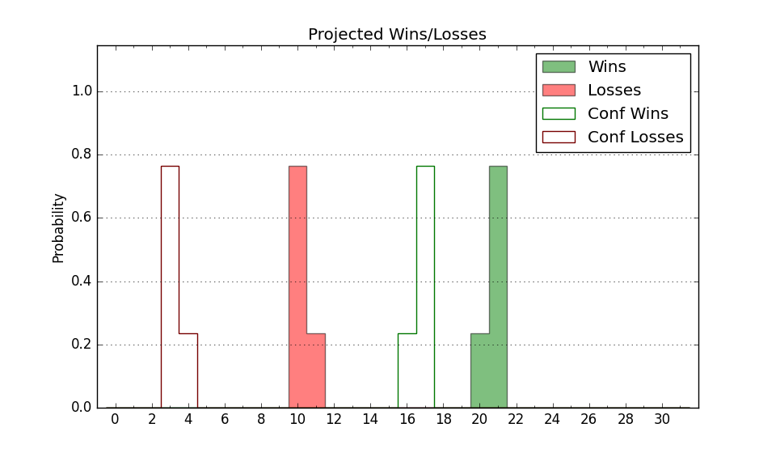

| Home | Game Probabilities | Conferences | Preseason Predictions | Odds Charts | NCAA Tournament |
| City: | North Andover, MA | |
| Conference: | Metro Atlantic (1st)
| |
| Record: | 16-3 (Conf) 20-10 (Overall) | |
| Ratings: | Comp.: -4.5 (213th) Net: -4.5 (213th) Off: 105.1 (243rd) Def: 109.5 (176th) SoR: 0.0 (100th) |
| Remaining | ||||||
|---|---|---|---|---|---|---|
| Date | Opponent | Win Prob | Pred. | |||
| 3/1 | @ Niagara (346) | 76.6% | W 67-60 | |||
| Previous | Game Score | |||||
| Date | Opponent | Win Prob | Result | Off | Def | Net |
| 11/3 | (N) South Dakota St. (178) | 41.3% | L 66-75 | -19.4 | 3.5 | -15.9 |
| 11/6 | @Auburn (31) | 3.3% | L 57-95 | -15.1 | -10.0 | -25.2 |
| 11/11 | @Tarleton St. (203) | 33.3% | L 62-76 | -18.8 | 2.4 | -16.5 |
| 11/15 | @Boston University (268) | 47.5% | W 91-79 | 32.6 | -7.7 | 24.9 |
| 11/19 | Maine (336) | 89.2% | W 72-65 | 0.5 | -18.5 | -18.0 |
| 11/21 | @Florida (6) | 1.0% | L 45-80 | -15.5 | 10.9 | -4.6 |
| 11/28 | @Penn (159) | 24.5% | L 65-77 | -5.8 | -4.5 | -10.3 |
| 11/29 | (N) Hofstra (91) | 19.8% | L 58-78 | -18.1 | -1.9 | -19.9 |
| 11/30 | (N) La Salle (244) | 58.0% | W 66-60 | -0.0 | 6.4 | 6.4 |
| 12/4 | Rider (357) | 94.6% | W 68-66 | -10.7 | -11.5 | -22.2 |
| 12/7 | Fairfield (254) | 73.7% | W 74-63 | 1.2 | 4.3 | 5.5 |
| 12/10 | @Princeton (253) | 45.0% | W 59-56 | -1.6 | 9.6 | 8.1 |
| 12/14 | @Vermont (238) | 41.4% | L 59-66 | -5.6 | -3.9 | -9.5 |
| 12/29 | @Sacred Heart (301) | 58.5% | W 80-72 | 8.4 | -2.5 | 5.9 |
| 1/2 | Mount St. Mary's (302) | 83.2% | W 75-65 | -0.4 | 1.4 | 1.0 |
| 1/4 | Manhattan (337) | 89.4% | W 73-66 | -14.0 | 2.5 | -11.5 |
| 1/9 | @Siena (208) | 34.1% | W 63-59 | 14.5 | 0.1 | 14.6 |
| 1/11 | @Saint Peter's (259) | 45.5% | L 63-76 | -1.6 | -19.9 | -21.5 |
| 1/17 | Quinnipiac (232) | 68.4% | W 83-71 | 17.7 | -6.4 | 11.3 |
| 1/19 | @Marist (169) | 26.5% | W 68-55 | 10.7 | 16.7 | 27.4 |
| 1/22 | @Iona (250) | 44.1% | L 60-61 | -2.9 | 5.8 | 3.0 |
| 1/24 | Saint Peter's (259) | 73.9% | W 67-59 | -2.7 | 5.9 | 3.2 |
| 2/1 | Sacred Heart (301) | 82.7% | W 75-58 | 1.4 | 12.2 | 13.7 |
| 2/5 | @Mount St. Mary's (302) | 59.3% | W 87-70 | 17.4 | -0.4 | 16.9 |
| 2/7 | @Rider (357) | 83.8% | W 73-47 | 13.1 | 14.0 | 27.1 |
| 2/12 | Marist (169) | 55.1% | W 81-56 | 20.6 | 11.0 | 31.6 |
| 2/15 | @Quinnipiac (232) | 38.8% | W 56-49 | -17.0 | 29.4 | 12.4 |
| 2/20 | Siena (208) | 63.8% | W 79-72 | 17.6 | -11.9 | 5.7 |
| 2/22 | Iona (250) | 72.9% | W 88-86 | 9.8 | -17.5 | -7.7 |
| 2/27 | @Canisius (350) | 78.5% | L 62-67 | -6.0 | -13.7 | -19.8 |
| Stats & Trends | |||||
|---|---|---|---|---|---|
| Current | Day | Week | Month | Season | |
| Composite | -4.5 | -0.8 | -0.8 | +3.2 | +5.7 |
| Comp Rank | 213 | -7 | -5 | +28 | +46 |
| Net Efficiency | -4.5 | -0.8 | -0.8 | +3.1 | -- |
| Net Rank | 213 | -7 | -5 | +28 | -- |
| Off Efficiency | 105.1 | -0.2 | +1.0 | +2.6 | -- |
| Off Rank | 243 | -7 | +12 | +33 | -- |
| Def Efficiency | 109.5 | -0.6 | -1.8 | +0.6 | -- |
| Def Rank | 176 | -8 | -29 | +28 | -- |
| SoS Rank | 296 | -9 | -18 | -36 | -- |
| Exp. Wins | 20.8 | -0.8 | -0.2 | +2.4 | +6.6 |
| Exp. Conf Wins | 16.8 | -0.8 | -0.2 | +2.4 | +6.0 |
| Conf Champ Prob | 100.0 | -- | +0.2 | +56.4 | +88.4 |

| Advanced Stats | ||
|---|---|---|
| Stat | Value | Rank |
| Off Eff FG % | 0.485 | 274 |
| Off Ast Ratio | 0.141 | 216 |
| Off ORB% | 0.220 | 351 |
| Off TO Rate | 0.140 | 138 |
| Off FT Ratio | 0.405 | 63 |
| Def Eff FG % | 0.489 | 89 |
| Def Ast Ratio | 0.151 | 215 |
| Def ORB% | 0.414 | 365 |
| Def TO Rate | 0.153 | 130 |
| Def FT Ratio | 0.402 | 287 |